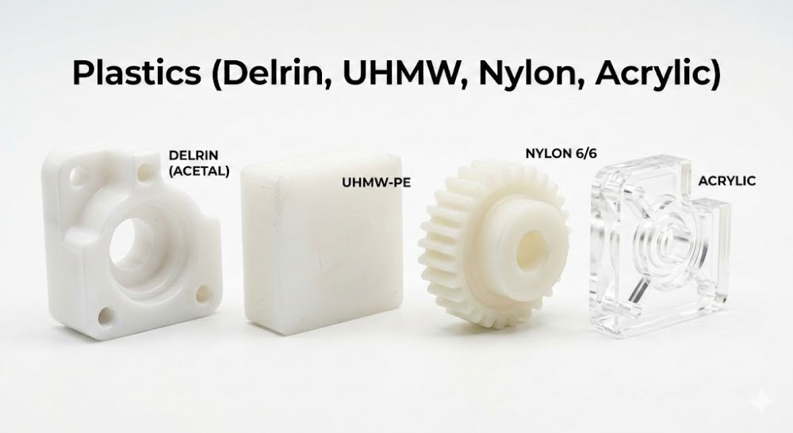
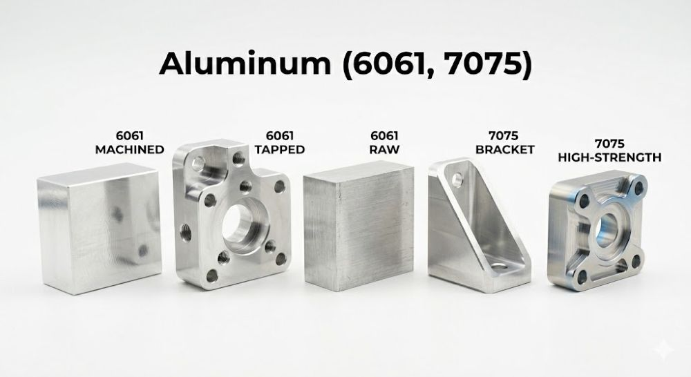
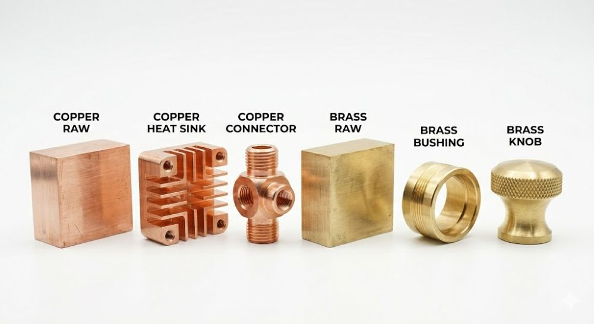
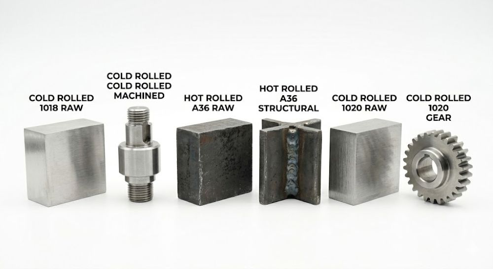
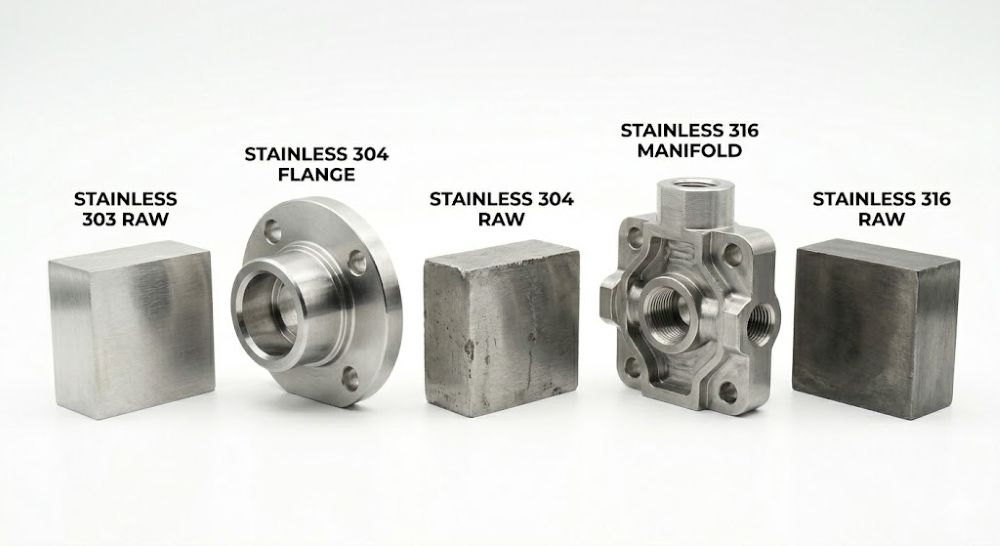
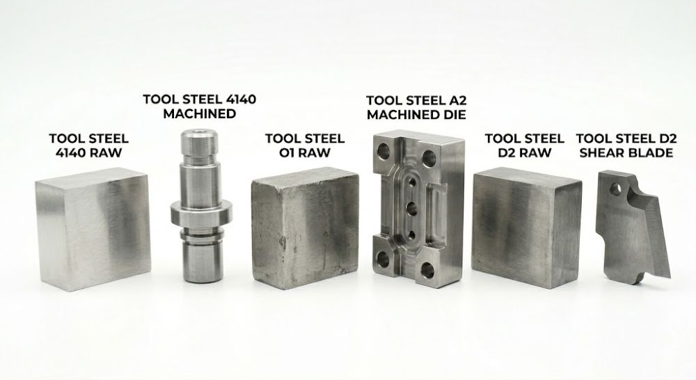

At Khamken Designs, LLC we believe the best engineering happens where design meets the reality of the machining. High-quality machining shouldn’t come with unnecessary costs which can be commonly mitigated by small adjustments to a CAD model — such as tweaking an internal radius or selecting a specific material grade — ultimately leading to savings in production time and cost. While not exhaustive, this guide highlights key considerations intended to help optimize your designs for CNC machining processes.
Note: Have a unique design that requires "breaking" these rules? We get it — sometimes achieving the intended purpose requires special consideration and the appropriate trade-offs.. Contact us and we can walk through a technical review of your specific requirements.

Plastics are fast to machine but have a "memory" and can deform under heat.
Delrin (Acetal): The gold standard for machining. It holds tolerances beautifully and chips cleanly. Tip: Great for tight-tolerance plastic parts.
Acrylic: Extremely brittle. Tip: Avoid sharp internal corners or tapped holes near edges, as they are prone to stress cracking. Suggest "radiused" transitions instead.

The "bread and butter" of CNC machining. It's fast, light, and cost-effective. Given its soft nature however it scratches more easily.
If the part is aesthetic, suggest a "Bead Blast and Anodize" finish. This hides minor tool marks and provides a durable, professional look.
For high-load applications, Helicoils (threaded inserts) are recommended as raw threads can damage over time with repeated use.

These are "gummy" materials that can clog up tools if not handled correctly.
Copper is highly ductile and tends to "stick" to the cutting tool. When feasible, keep designs simple; complex deep-cavity cooling fins in copper are significantly more expensive than in aluminum.
Brass machines like butter. It's excellent for high-detail, small parts. It is generally great for electrical components or decorative hardware where corrosion resistance is needed without the cost of stainless.

Cold Rolled Steel (CRS) produces a much cleaner finish and holds better dimensional accuracy. CRS is the better choice for precision mechanical components that will be plated or painted later.
Hot Rolled Steel (HRS) often has a hard "scale" on the outside surface that is tough on tools and looks messy. HRS is generally recommended for structural parts where aesthetics don't matter and tolerances are loose.

Stainless is "work-hardening," meaning if the tool rubs instead of cuts, the material gets harder and tougher to machine.
The 303 vs. 304 Choice: This is the #1 cost-saving tip for customers. 303 Stainless is "free-machining" and much cheaper to process.
Unless the part requires welding or extreme chemical resistance (where 304 or 316 is needed), 303 stainless is generally recommended to save significant costs.

These are used for high-wear parts, jigs, and fixtures.
In order to achieve the hardness of each respective tool steel type, heat treatment is required which can cause slight dimensional warping. If a part needs to be "dead-on" after hardening, it must be machined, heat-treated, and then ground to final size — which adds an additional step to the cost.
Always use generous internal radii in tool steel to prevent "stress risers" that could cause the part to crack during the quenching process of heat treatment.